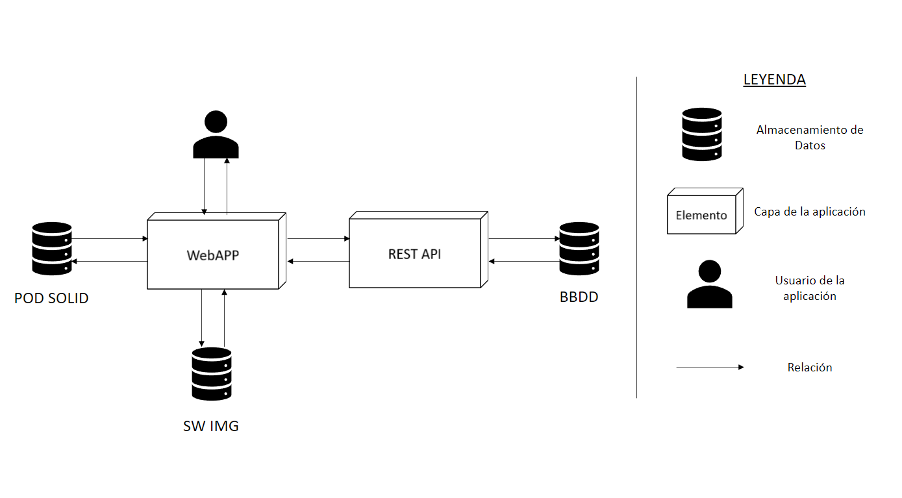
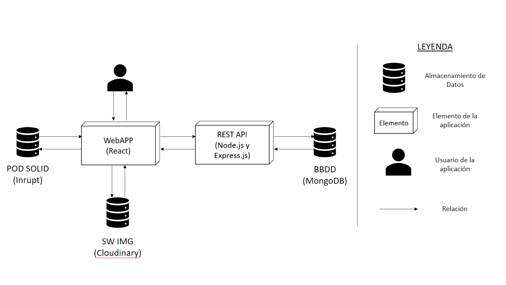
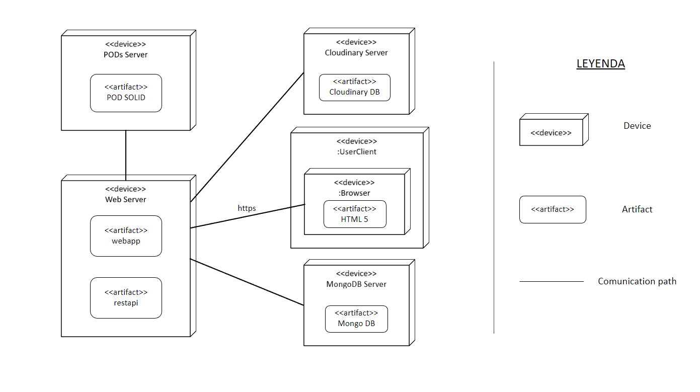

1. Introducción y metas
LoMap es una aplicación desarrollada por HappySw, en la que sus usuarios tendrán acceso a un mapa personalizado con los sitios de su interés dentro de la ciudad de Bruselas.
La funcionalidad principal se basa en un mapa, en el cual el propio usuario podrá seleccionar y guardar sus locales o lugares favoritos para tenerlos siempre a mano. Estos lugares pueden ir desde tiendas, bares o los monumentos más icónicos de la capital belga.
A diferencia de otras aplicaciones de mapas, LoMap permite al usuario que sea él el que decida que ver sobre su propio mapa, eliminando los lugares de menos interés, lo cual permite que sea muy práctico, tanto para los propios habitantes de la ciudad como para los turistas.
La aplicación respeta la privacidad de los clientes mediante los principios SOLID.
1.1. Descripción de los requisitos
Los principales requisitos funcionales de la aplicación serán:
-
Los usuarios podrán marcar con chinchetas (temporal) los lugares de interés.
-
El sistema almacenará y mostrará los lugares ya marcados anteriormente dependiendo de los datos que haya en el pod de cada usuario.
-
Los usuarios podrán añadir tanto fotos, como comentarios en los lugares que hayan añadido.
-
Los usuarios podrán agregar amigos para poder ver los lugares y comentarios que hicieron sobre los mismos.
-
El mapa tendrá filtros, ya sea para filtrar los lugares por restaurantes o monumentos, o para ver los lugares favoritos de sus amigos.
1.2. Objetivos de calidad
| Prioridad | Meta | Motivación |
|---|---|---|
1 |
Usabilidad |
La aplicación debe ser fácilmente usable por cualquier usuario, con mucha o poca experiencia. Para ello se llevarán a cabo tanto cuestionarios como pruebas de usabilidad exhaustivas. |
2 |
Calidad |
La aplicación debe tener una calidad y claridad de código que será revisada con ESLint. |
3 |
Privacidad |
El tratamiento de la información privada del usuario debe ser descentralizada, asegurando así su privacidad. |
4 |
Eficiencia |
Al abrir la aplicación o seleccionar un elemento debe ser eficiente y sus tiempos de carga bajos. |
1.3. Stakeholders
| Rol/Nombre | Contacto | Expectativas |
|---|---|---|
Cliente |
Interaccionan de manera directa con la aplicación, tienen un usuario y amigos y pueden visualizar los puntos de interés |
El objetivo principal es que sea capaz de interactuar con la aplicación de forma intuitiva y de una manera cómoda para el usuario aún sin ser un usuario avanzado. |
Equipo de desarrollo |
Los creadores de la aplicación, pueden modificarla y mejorarla |
Trabajan para aprender las tecnologías necesarias para desarrollar el proyecto y funcionar como un equipo. |
Profesores |
Interaccionan con el equipo de desarrollo para corregir posibles defectos |
Esperan que la aplicación sea funcional y cumpla los requisitos requeridos. También proporcionan soporte en caso de que sea necesario para el equipo de desarrollo. |
2. Restricciones
2.1. Restricciones tecnicas
| Restricción | Explicación |
|---|---|
Implementación |
El front-end estará formado por React y el back-end por Node.js con Express. |
Seguridad |
La información de los usuarios se almacenará en PODs siguiendo los principios SOLID. |
Base de Datos |
Usaremos TBD. |
2.2. Restricciones organizacionales
| Restricción | Explicación |
|---|---|
Equipo |
Lara Fernández Méndez, Eloy Alfredo Schmidt Rodríguez, Luis Manuel Solares García, Miguel Mier Castañón. |
Control del Repositorio |
Todo el proyecto se encuentra en un repositorio en github con las siguientes ramas: Rama Master, rama Release, Rama Develop y una rama por cada usuario. |
2.3. Convenciones
| Restricción | Explicación |
|---|---|
Documentación |
Arquitectura AsciiDoc. |
Idioma |
Español. |
3. System Scope and Context
3.1. Contexto Empresarial
La aplicación LoMap consta de un Frontend y un Backend que se comunican con un sistema de PODs y una base de datos que contiene los lugares que se van a utilizar en la aplicación.
Los usuarios se comunicarán con el Frontend de la aplicación el cual se comunicará con el sistema de PODs externo a la aplicación para obtener la información del Usuario y sus lugares almacenados. El Frontend también se comunicaré con el Backend de la aplicación para obtener la información de los lugares que almacena en Usuario en el POD.
Diagrama de Contexto Empresarial

Tabla de Contexto Empresarial
| Elemento de comunicación | Input | Output |
|---|---|---|
Frontend |
El Frontend recibe como entradas los datos solicitados al POD así como peticiones por parte del Usuario de diferentes pantallas de la pagina Web. También recibe las respuestas de las peticiones al Backend de la aplicación. |
Las salidas que proporciona el Frontend son peticiones al Backend de la aplicación para la obtención de información sobre un lugar así como peticiones al POD para obtener información de los mapas de un usuario. También proporciona una visualización al usuario de forma gráfica. |
Backend |
Recibe como entradas las peticiones por parte del Frontend y las respuestas por parte de la BBDD |
El Backend tiene como salidas las respuestas a las peticiones del Frontend y las peticiones de datos a la BBDD. |
BBDD |
Como entrada tiene las peticiones de datos almacenados por parte del Backend de la aplicación |
Como salidas devuelve los objetos solicitados o un mensaje de error en el caso de que no exista lo que el Backend solicita. |
POD |
Como entrada el POD recibe una petición de obtención de los datos de un Usuario |
Como salida devuelve los datos del Usuario si está autorizada la petición o un mensaje de error en caso contrario. |
Usuario |
El usuario visualiza de forma gráfica la petición que ha realizado al Frontend de la aplicación |
El usuario solicita al Frontend la visualización de una pagina de la aplicación. |
3.2. Contexto Técnico
Diagrama de Contexto Técnico

Mapeado de Input/Output a Canales
| Canal de comunicación | Input | Output |
|---|---|---|
SOLID-WebAPP |
Se utiliza una comunicación HTTPS para solicitar datos a SOLID |
Se utiliza una comunicación HTTPS para la obtención de la respuesta por parte de SOLID. |
WebApp-RestAPI |
Se utiliza una petición HTTPS desde la WebApp hacía la RestAPI |
Se utiliza una respuesta HTTPS desde la RestAPI hacía la WebApp. |
RestAPI-MongoDB |
Se utiliza una petición HTTPS desde la RestAP hacía la base de datos MongoDB online |
Se devuelve una respuesta HTTPS por parte de la base de datos MongoDB hacía la RestAPI. |
WebAPP-Usuario |
La WebApp recibe una peticíon HTTP por parte del Usuario |
La WebApp devuelve una pagina dinámica al Usuario por medio de una respuesta HTTP. |
4. Estrategia de solución
-
Base de datos: TBD.
-
Express js: Express es un marco de aplicación web de Node js que proporciona amplias funciones para crear aplicaciones web y móviles. Se utiliza para crear una aplicación web híbrida, de varias páginas y de una sola página.
-
React JS: Es un framework creado por Facebook ampliamente utlizado para crear componentes de la interfaz de usuario. Escogido por el gran volumen de documentación y ser el framework utilizado durante los anteriores cursos.
-
Despliegue: TBD.
4.1. Diseño
4.2. Seguridad
Garantizamos la seguridad del usuario mediante el uso de PODs.
4.3. Testabilidad
Se realizarán pruebas para cada parte individual de la aplicación, garantizando así el correcto funcionamiento de los diferentes modulos tanto individualmente como de forma conjunta.
4.4. Desarrollo
Para esta fase inicial del proyecto se ha tenido más en cuenta el Front-End, el Back-End se tendrá mayor en consideración más adelante en el curso, ya que en otras asignaturas se van a adquirir conocimientos útiles que se podrán aplicar.
4.5. Estructura
4.6. Interfaz
La interfaz gráfica será elegida entre todos los miembros del equipo, aportando cada uno algún boceto o idea, los cuales serán puestos en común y se decidirá cual se ajusta mejor a la apicación esperada y que elementos de dichos bocetos resultan más adecuados. Para ello se tendrá en cuenta la usabilidad y las necesidades de los difentes tipos de usuarios.
5. Building Block View
El código se descompone de manera estructurada por niveles, en los que se enseñan las dependencias internas de cada elemento. El sistema se divide en Whitebox y Blackbox. El sistema se divide en Whitebox y Blackbox.
5.1. Whitebox Overall System

| Actores | Descripción |
|---|---|
Actores |
Descripción |
Cliente / Usuario |
Es el que interactúa directamente con la aplicación y su interfaz de usuario. Cada uno tiene un POD en el cual se almacenan sus datos y al cual se puede acceder. |
Administrador |
Tiene acceso al completo de la aplicación y puede administrarla para que funcione correctamente. |
5.2. Blackbox Overall System
| Nombre | Descripción |
|---|---|
Nombre |
Descripción |
SOLID |
Cada usuario tiene su POD y permite a la aplicación acceder a sus datos. |
Base de Datos |
Provee a la aplicación de la información necesaria, ya sean los mapas o los puntos de interés. |
Interfaz de usuario |
La interfaz con la que interactúa el usuario. |
6. Vista en tiempo de ejecución
6.1. Registro en aplicación
6.2. Inicio de sesión en aplicación

6.3. Busqueda de lugares mediante filtros (considerando que la sesión ya está iniciada)

6.4. Añadir nuevo lugar al mapa (considerando que la sesión ya está iniciada)

7. Vista de implementación
7.1. Infraestructura Nivel 1

La aplicación se encuentra alojada en un servidor web que interactúa con los diferentes clientes a traves del puerto 8081. Ademés, este servidor se nutre de la información almacenada dentro de una base de datos MongoDB alojada en un servidor en la nube. También obtiene la información de los usuarios a traves de los PODs de SOLID que se encuentran en nuestro caso dentro del provedor de SOLID Inrupt.
7.2. Infraestructura Nivel 2
7.2.1. Web App
La Web APP es la que se comunica con los distintos clientes de usuario a traves del puerto 3000. Esta proporciona vistas HTML 5 con JavaScript con las que el usuario podrá interactuar desde su navegador. Además desde la propia WebAPP se conectará con lo PODs de los usuarios para permitir el acceso y permitir la visualización de los mapas.
7.2.2. REST API
La REST API nutre de información a la Web App por medio de los distintos endpoints que proporciona. La API se encuentra alojada en el puerto 5000. Además, la información que proporciona la obtiene de la BBDD MongoDB alojada en la nube.
7.2.3. PODs SOLID
Los PODs almacenan la información de los usuarios y se encuentran dentro de los servidores de Inrupt en la nube, que sirve PODs de SOLID.
7.2.4. MongoDB
La base de datos se encuentra alojada en los propios servidores que proporciona MongoDB en la nube exactamente se encuentra en (Poner la máquina de AWS que almacena la BBDD)
7.3. Aspectos de calidad y rendimiento
Se espera que los componentes de la LoMap proporcionen los siguientes aspectos de calidad y de rendimiento en cuanto a los tiempos de respuesta y a la disponibilidad de los distintos elementos
| Dispositivo | Tiempo de respuesta | Disponibilidad |
|---|---|---|
Web App |
Poco tiempo de respuesta |
Alta |
REST API |
Tiempo medio de respuesta |
Alta |
MongoDB |
Especificado por el proveedor |
Especificado por el proveedor |
PODs Solid |
Especificado por Inrupt |
Especificado por Inrupt |
8. Conceptos transversales
8.1. Persistencia
Los datos de los usuarios serán almacenados, de manera que cada usuario conservará la información que hayan creado sobre un lugar de manera descentralizada.
8.2. Usuarios y su privacidad
Las contraseñas e información sensible no sera almacenada en una base de datos para mayor seguridad. En cambio, se optará por almacenar dicha información en un pod personal de cada usuario siguiendo los principios SOLID.
8.3. Interfaz de Usuario
Para la interfaz gráfica se usará el framework React, teniendo como base los diseños aceptados y creados por los miembros del equipo.
8.4. Manejo de Sesión
Para el inicio de la sesión será necesario estar registrado previamente o deberá registrarse. La información almacenada por el usuario solo será accesible por este a través de su pod y siguiendo los principios SOLID.
8.5. Testeable
Para añadir una funcionalidad o característica deberá ser probada adecuadamente con anterioridad. Con esto en mente se deberán realizar tanto pruebas unitarias, para comprobar el correcto funcionamiento del código, como pruebas relacionadas con la usabilidad.
8.6. Modelo de dominio
Concepto inicial del modelo de dominio, altamente sujeto a cambios y ampliaciones.
9. Design Decisions
| Nombre | Problema | Decisión |
|---|---|---|
POD |
La aplicación necesita acceder a información del usuario de una manera descentralizada. |
Cada usuario debe tener su propio POD con información del mismo y al iniciar la aplicación le dará permiso a la misma para usar su información guardada. |
DB |
Se piensa en cómo guardar información general de la aplicación y se piensa en usar una base de datos. |
POR DECIDIR ESTE APARTADO |
Frontend |
Se necesita decidir el lenguaje a usar en frontend |
Se usará React, ya que su posibilidad con los componentes es realmente buena. |
Backend |
Se necesita decidir el lenguaje a usar en backend |
Se usarán Node.js y Express.js. |
Documentación |
Se necesita decidir el lenguaje a usar en la documentación |
Se usará Asciidoc, se pensó en usar Markdown, pero por evitar posibles problemas de compatibilidad se decide usar Asciidoc. |
Reuniones |
El grupo tiene que decidir como repartir el trabajo o solucionar problemas |
Previo a las clases de laboratorio, cada miembro propondrá temas a tratar en cada reunión mediante Issues en el repositorio en Github. Una vez reunidos, si durante la semana fuera necesario, se reune otra vez el grupo y quedará constancia de ello. |
10. Requisitos de calidad
10.1. Árbol de calidad
10.2. Escenarios de calidad
| Id | Atributo de calidad | Escenario de calidad |
|---|---|---|
US1 |
Usabilidad |
La navegación por la aplicación debe de ser sencilla, permitiendo a los usuarios diferenciar claramente las diferentes opciones. |
COM1 |
Comprensibilidad |
La aplicación debe ser sencilla de usar para todos los usuarios independientemente de su nivel de experiencia o posibles dificultades como discapacidades visuales. |
SEG1 |
Seguridad |
Los datos de los usuarios estarán protegidos y no será posible el acceso por parte de terceros. |
TEST1 |
Testabilidad |
Se documentará la funcionalidad de las diferentes partes de la aplicación en su código con la finalidad de poder ser modificado y testeado por los diferentes miembros del equipo. |
TEST2 |
Testabilidad |
Antes de de añadir una funcionalidad, ésta debe ser probada, ya sea con pruebas unitarias o pruebas de usabilidad. |
11. Riesgos y deudas técnicas
| Riesgo | Explicación |
|---|---|
Desconocimiento de REACT |
Es la primera vez que trabajamos con este framework. |
Desconocimiento de Node.js |
Es la primera vez que trabajamos con ello. Lo estamos usando también en otra asignatura, lo cual nos beneficiara para entenderlo. |
Uso de POD’s |
No conocemos el funcionamiento de estos. |
Equipos |
No estamos muy familiarizados con los trabajos en equipo y puede que nos sea dificil coordinarnos. |
Github |
Todos lo hemos usado ya y sabemos más o menos el funcionamiento, pero hay caracteristicas que son nuevas para nosotros y estamos aprendiendo a utilizar. |
12. Glossary
| Termino | Definición |
|---|---|
REACT |
Biblioteca de JavaScript para construir interfaces de usuario |
Principios SOLID |
Single Responsibility, Open-Close Principle, Liskov Substitution, Interface Segregation Principle, Dependency Inversion Principle |
AsciiDoc |
Lenguaje de marcado de texto sin formato para escribir contenido técnico. |
GitHub |
Portal creado para alojar el código de las aplicaciones de cualquier desarrollador |
Node.js |
Entorno de tiempo de ejecución de JavaScript |
Express |
Es el framework web más popular de Node |
POD |
Contenedor, en el que se presenta un conjunto de datos al usuario. |
About arc42
arc42, the Template for documentation of software and system architecture.
By Dr. Gernot Starke, Dr. Peter Hruschka and contributors.
Template Revision: 7.0 EN (based on asciidoc), January 2017
© We acknowledge that this document uses material from the arc 42 architecture template, http://www.arc42.de. Created by Dr. Peter Hruschka & Dr. Gernot Starke.